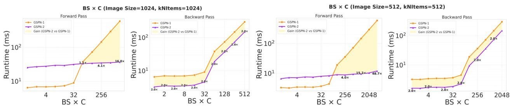

在不把图像硬拉成 1D token stream 的前提下追求近线性复杂度，为 ViT self-attention 之外的视觉 foundation encoder 提供可扩展路线。
Scaling Parallel Sequence Models to Foundation-Scale Vision Encoders Yitong Jiang, Hongjun Wang, Collin McCarthy, Hanrong Ye, David Wehr, Xinhao Li, Qi Dou, Tianfan Xue, Ka Chun Cheung, Simon See, Wonmin Byeon, Ke Chen, Kai Han, Jinwei Gu, Hongxu Yin, Pavlo Molchanov, Jan Kautz, Sifei Liu；机构信息 arXiv 元数据未列出。 arXiv 原文链接
先说结论。通用视觉自监督不只关心 loss，也关心 encoder 架构能否在高分辨率和大数据上可扩展。 在不把图像硬拉成 1D token stream 的前提下追求近线性复杂度，为 ViT self-attention 之外的视觉 foundation encoder 提供可扩展路线。
(b) Foundation-scale encoder: faster & more accurate Figure 1: One method, C-GSPN, at two (b) Foundation-scale encoder: faster & more accurate Figure 1: One method, C-GSPN, at two levels of efficiency. (a) System efficiency. The fast GSPN kernel turns the line scan into a single fused, warp-specialized CUDA kernel, running up to 40–52× faster than the original GSPN reference kernel across input configurations. (b) Architecture & training efficiency. Built on this fast kernel, C-GSPN’s compressed block and cross-operator distillation scale 2D spatial propagation to a foundation-scale vision encoder, achieving lower training latency and higher ADE20K segmentation accuracy than a distilled ViT at 378 and 1K resolutions (2.40× faster at 1K).这张图概括 Scaling Parallel Sequence Models to 的整体方法流程。阅读时先看模块之间传递的训练信号，再看作者如何把目标拆成可优化的子问题。

Figure S1: Fast GSPN vsFigure S1: Fast GSPN vs. state-of-the-art architectures on ImageNet-1K, analyzing the trade-off between accuracy, model size, and throughput. Fast GSPN is well suited to resource-constrained settings requiring both speed and accuracy. Figure S2: Runtime comparison of the original GSPN kernel and the fast GSPN kernel across different batch size × channel products. Fast GSPN’s advantage grows markedly as ?? × ?? increases.这张图概括 Scaling Parallel Sequence Models to 的整体方法流程。阅读时先看模块之间传递的训练信号，再看作者如何把目标拆成可优化的子问题。